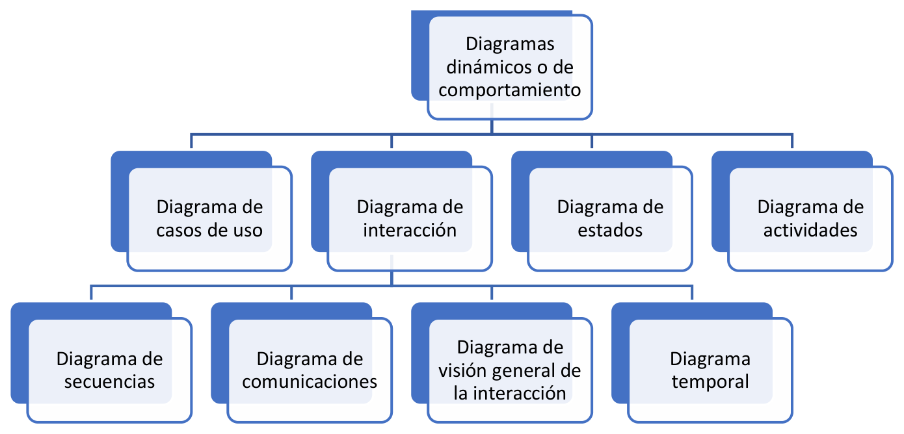

Los diagramas de comportamiento
Si el diagrama de clases es el plano del edificio, los diagramas de comportamiento son la grabación de lo que ocurre dentro cuando el edificio está en uso. Los primeros describen lo que el sistema tiene: sus piezas, sus datos y las relaciones entre ellas. Los segundos describen lo que el sistema hace: qué ocurre cuando alguien pulsa un botón, qué mensajes se intercambian los objetos, en qué orden y en qué circunstancias cambia de situación un pedido o una factura.
Esa distinción no es un capricho clasificatorio, sino una necesidad práctica que se nota en cuanto un proyecto avanza. Imaginemos un sistema con un modelo de clases impecable: veinte clases, herencias bien situadas, multiplicidades correctas y ni una sola relación mal puesta. Se genera el código desde ese modelo y se entrega al cliente. A las dos semanas llega la primera reclamación: no se puede anular una factura que ya se ha contabilizado, y el programa lo permite. Nadie lo decidió así, simplemente ocurrió, porque el modelo decía que existe una clase Factura y una operación anular(), pero nadie había escrito en ninguna parte cuándo se puede anular y cuándo no. Ese hueco es exactamente lo que cubren los diagramas de comportamiento.
El problema de fondo es que la estructura y el comportamiento son dos preguntas independientes, y responder bien a la primera no responde a la segunda. Un modelo de clases puede ser completo y correcto y, a la vez, dejar sin decidir el orden de los mensajes, las condiciones que habilitan cada operación, los caminos alternativos de un proceso y qué ocurre cuando algo falla. Esas decisiones son las que provocan los errores caros, porque son las que nadie escribe por costumbre y las que el programador improvisa bajo presión, cada uno de una manera distinta.
En este apartado trabajamos los siete diagramas de comportamiento que define UML, con el mismo enfoque del apartado anterior: entender qué representa cada uno, aprender a leerlo y ser capaces de construir ejemplos sencillos con una herramienta real.
Los siete diagramas de comportamiento
Dentro de los diagramas dinámicos o de comportamiento encontramos siete tipos:
- Diagrama de casos de uso: considera los comportamientos del sistema desde el punto de vista de sus interacciones con el mundo exterior. Muestra quién usa el sistema y para qué.
- Diagrama de estados: describe las diferentes situaciones de los objetos a lo largo de su vida, junto con las causas, condiciones y consecuencias de los cambios de una situación a otra.
- Diagrama de actividades: describe un comportamiento complejo en forma de secuencias condicionales de actividades componentes, desde un punto de inicio hasta un punto final.
- Diagrama de interacción: describe comportamientos emergentes, es decir, comportamientos que no pertenecen a un objeto aislado sino al intercambio entre varios. Agrupa a su vez cuatro variantes, que son los diagramas de secuencias, de comunicaciones, de visión general de la interacción y temporal.

El árbol de la figura muestra cómo se organizan los siete, y merece la pena detenerse en un detalle que suele pasar desapercibido: hay tres diagramas y una familia de cuatro. Los casos de uso, los estados y las actividades son diagramas de pleno derecho; el diagrama de interacción, en cambio, no es un tipo concreto de dibujo, sino un nombre colectivo para cuatro formas distintas de contar lo mismo. Esa jerarquía explica por qué al hablar de "diagrama de secuencia" o "diagrama de comunicaciones" en realidad estamos describiendo maneras diferentes de mirar un único fenómeno: un intercambio de mensajes entre objetos.
La otra idea que conviene retener es que no hacen falta los siete. Un proyecto real utiliza tres o cuatro, elegidos en función de lo que haya que decidir y del momento del proyecto. El resto existen, siguen el mismo vocabulario y aparecen cuando el sistema lo justifica; conocerlos todos sirve para saber cuál elegir, no para dibujarlos todos.
El campo de aplicación
Cada diagrama responde a una pregunta distinta, y elegir el adecuado es la mitad del trabajo. La siguiente tabla resume para qué sirve cada uno y qué ocurre cuando se usa el que no toca.
| Diagrama | Pregunta que responde | Cuándo usarlo | Si se usa mal |
|---|---|---|---|
| Casos de uso | ¿Quién usa el sistema y para qué? | Al principio, para acordar el alcance con el cliente | Se convierte en una lista de funciones sin responsables ni frontera |
| Secuencia | ¿En qué orden se envían los mensajes entre los objetos? | Para detallar un caso de uso concreto paso a paso | Reproduce línea a línea un código que todavía no existe |
| Comunicaciones | ¿Qué objetos participan y qué mensajes intercambian? | Para ver de un vistazo la red de colaboraciones | Se elige cuando lo que importa es el orden, y el orden se pierde |
| Visión general de la interacción | ¿Cómo se encadenan varios escenarios entre sí? | Como índice que enlaza varios diagramas de interacción | Se usa para detallar un escenario, y no tiene espacio para ello |
| Temporal | ¿Cómo evolucionan los estados a lo largo del tiempo? | En sistemas con restricciones de tiempo estrictas | Se aplica a un sistema sin requisitos temporales, y no aporta nada |
| Actividades | ¿Qué pasos se siguen, con sus decisiones y ramificaciones? | Para describir procesos y flujos de trabajo | Se usa para modelar un objeto concreto, y obliga a dibujar el proceso entero |
| Estados | ¿Por qué situaciones pasa un objeto y qué las provoca? | Para objetos con un ciclo de vida rico, como un pedido o una factura | Se aplica a un objeto sin historia, y sale un dibujo trivial |
La tabla deja ver una regla que se cumple casi siempre: cuanto más cerca estamos de acordar qué tiene que hacer el sistema, más arriba de la lista trabajamos, y cuanto más cerca estamos de decidir cómo lo hará, más abajo. Los casos de uso se dibujan con el cliente delante; el diagrama de secuencia se dibuja con el código en la cabeza. Ese orden no es una formalidad, sino el reflejo de que cada diagrama necesita información distinta para poder construirse.
Cuando la duda persiste entre dos candidatos, hay una pregunta que desempata casi siempre. Si lo que quiero dejar por escrito es quién hace cada cosa, el diagrama es el de secuencia o el de comunicaciones. Si lo que quiero dejar por escrito es qué hay que hacer, con independencia de quién lo haga, el diagrama es el de actividades. Y si lo que quiero dejar por escrito es qué le puede pasar a un objeto concreto, el diagrama es el de estados. Tres preguntas, tres respuestas, y ninguna de las tres se contesta con el diagrama de las otras.
Cómo se relacionan con los diagramas de estructura
Merece la pena insistir en la dependencia que existe entre las dos familias, porque es la causa más habitual de diagramas de comportamiento mal hechos. Los diagramas dinámicos se construyen sobre los estáticos, nunca al revés.
Pensemos en un diagrama de secuencia: cada participante que aparece en la cabecera es una instancia de una clase, y cada mensaje que se envía entre dos líneas de vida es una operación declarada en el diagrama de clases. Si el diagrama de clases no existe o está incompleto, el diagrama de secuencia se convierte en una lista de deseos: aparecen mensajes que no corresponden a ninguna operación, objetos que no tienen clase y responsabilidades repartidas al azar. El dibujo queda bonito y no sirve para nada, porque no se puede programar.
La relación funciona también en el sentido contrario, y ahí está su mayor utilidad. Un diagrama de secuencia es la mejor prueba de fuego para un diagrama de clases, porque pone el modelo a trabajar con un caso real y deja al descubierto sus defectos: las operaciones que faltaban, los objetos que tienen que consultar datos que no les pertenecen ni pueden alcanzar por ninguna asociación, o el participante que acumula todas las llamadas mientras los demás no hacen nada. Cada uno de esos síntomas es un error del modelo de clases que se descubre escribiendo el diagrama de secuencia, y descubrirlo dibujando cuesta minutos en lugar de costar días de refactorización.
La misma relación se repite con los demás. Un diagrama de estados habla de un objeto concreto, y ese objeto procede de una clase del modelo; cada transición que aparece en él se corresponde con una operación de esa clase. Un diagrama de actividades describe un proceso, y los procesos se ejecutan sobre las operaciones que el modelo declara. Por eso el orden natural del trabajo es siempre el mismo: primero la estructura, después el comportamiento, y volver a la estructura cada vez que el comportamiento revela algo que no encajaba. Ese ir y venir entre las dos vistas es lo que se llama modelar, y no es un síntoma de que algo vaya mal, sino la forma normal de trabajar.
Cómo se leen y cómo se construyen
Buena parte del trabajo con diagramas de comportamiento consiste en leer, porque en un proyecto real lo más habitual es llegar a un modelo que otra persona dibujó. Leer es una habilidad que se entrena con un método sencillo de tres pasos. El primero es identificar los participantes y los elementos del diagrama, sin preocuparse todavía por lo que hacen. El segundo es seguir el recorrido desde el inicio hasta el final, anotando el orden en que ocurren las cosas. Y el tercero, el que de verdad distingue a quien sabe leer un diagrama, es hacerse la pregunta de qué ocurre en cada bifurcación: por cada camino alternativo que aparece, hay una condición que lo habilita, y esa condición es la que hay que saber explicar. Si el diagrama no permite responder a esa pregunta, o está mal dibujado o falta información.
Construir es el proceso inverso, y también tiene método. Lo que funciona es empezar siempre por un escenario: una narración breve, en lenguaje corriente, de una situación concreta con principio y final. Del tipo "un gestor registra una factura de servicios: selecciona el cliente, introduce las horas prestadas de cada servicio y el sistema calcula el importe total". A partir de ese texto salen casi solos los objetos que participan, los mensajes que se intercambian y los pasos del proceso, que después se trasladan a la notación que corresponda.
Dibujar directamente sobre la herramienta, sin haber escrito antes el escenario, es la vía más rápida a un diagrama bonito y equivocado. El motivo es fácil de entender: un diagrama obliga a decidir, y decidir cuesta. Si no se ha escrito antes qué pasa con el cliente que no existe, con el pago que se rechaza o con el documento que falta, el dibujo se termina en el camino lineal y esas situaciones se quedan fuera. El escenario las hace visibles en el papel, que es el sitio más barato para descubrirlas: una pregunta al cliente durante el análisis cuesta una llamada; la misma pregunta durante las pruebas cuesta una semana de trabajo.
En las páginas siguientes recorremos los cuatro grandes bloques de esta familia, cada uno con su ejemplo de referencia y con un ejemplo construido desde cero.